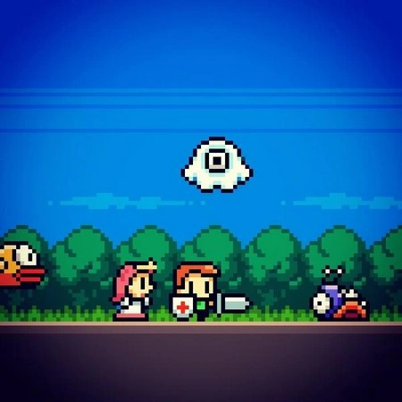
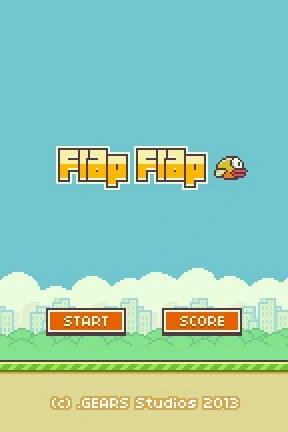
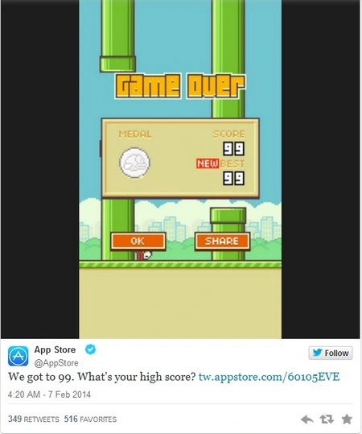

Quay trở lại vào tháng 11/2012, vào thời điểm này, Hà Đông đã chia sẻ lên trang Twitter của mình một hình ảnh, cho biết anh đang bắt đầu xây dựng những dự án game mới. Nếu chú ý kỹ vào bức ảnh được Hà Đông đăng tải có thể thấy rõ hình ảnh của chú chim Flappy Bird, xuất hiện cùng với các nhân vật trong các game khác do Hà Đông xây dựng.

Đến tháng 4/2012, Hà Đông lần đầu tiên chia sẻ về dự án game có tên gọi Flap Flap dành cho nền tảng iOS. Trò chơi với hình ảnh đồ họa mang phong cách cổ điển trước đây và Hà Đông cho biết anh chỉ mất 2 ngày để xây dựng trò chơi này. Đây chính là tiền thân của Flappy Bird ngày nay.

Một tháng sau, đến ngày 24/5/2013, Hà Đông chính thức đăng tải ứng dụng của mình lên kho ứng dụng App Store với tên gọi Flappy Bird. Hình ảnh của game không có nhiều thay đổi với hình ảnh của Flap Flap mà Hà Đông đã chia sẻ trước đó, ngoại trừ việc ứng dụng đã mang một tên mới.
Trước khi trở thành một “hiện tượng”, Flappy Bird đã có một thời gian dài “chìm nghỉm”.
Sau khi ra mắt game Flappy Bird, Hà Đông dường như bỏ rơi cả tài khoản Twitter của mình lẫn game và Flappy Bird cũng không thực sự gây được ấn tượng. Theo số liệu thống kê trên App Store (trước khi trò chơi bị gỡ bỏ), tính từ 25/5 đến 31/10/2013, Flappy Bird chỉ có 13 lượt bình luận cũng như chỉ thu hút một lượt ít số lượng tải. Thực tế, Flappy Bird dường như “vô hình” trên kho ứng dụng App Store.
Vào tháng 9/2013, Hà Đông phát hành bản nâng cấp đầu tiên của Flappy Bird để khắc phục một vài lỗi cũng như thêm biểu tượng của ứng dụng dành cho nền tảng iOS 7.
Đến đầu tháng 11/2013, “phép màu” bất ngờ xảy ra với Flappy Bird khi game xếp vị trí thứ 1469 ở thể loại “Game gia đình” (nghĩa là phổ biến thứ 1469 trong danh mục “Game gia đình” trên App Store của Apple). Một vài ngày sau đó, lần đầu tiên tài khoản Twitter của Hà Đông có một bình luận liên quan đến trò chơi Flappy Bird của mình, từ một người chơi.
Ngày 14/11/2013, Flappy Bird bất ngờ vươn lên vị trí thứ 393 trong danh mục “Game gia đình” trên kho ứng dụng App Store và bắt đầu gây được sự chú ý, số lượng và lượng bình luận về trò chơi bắt đầu tăng cao.
Ngày 3/12/2013, Flappy Bird chính thức xuất hiện trên biểu đồ thứ hạng tổng thể của kho ứng dụng App Store, đứng vị trí 1308 về độ phổ biến tính riêng tại Mỹ, xếp vị trí thứ 74 trong danh mục “Game gia đình” và xếp thứ 395 về game tại Mỹ.
Cùng với sự tăng trưởng của Flappy Bird, Hà Đông bắt đầu quay trở lại sử dụng tài khoản Twitter để trả lời các câu hỏi và bình luận về trò chơi của mình. Ngày 11/12/2013, Hà Đông tiết lộ Flappy Bird sẽ sớm xuất hiện trên kho ứng dụng của Android.
Ngày 13/12/2013, Flappy Bird lần đầu tiên lọt vào top 250 ứng dụng miễn phí tại Mỹ, thứ 80 trong danh mục game tại Mỹ và thứ 14 trong danh mục Game gia đình trên App Store.
Phải đến đầu năm 2014, Flappy Bird mới trở nên nổi tiếng và trở thành một “hiện tượng” trên toàn cầu. Vào ngày 10/1/2014, Flappy Bird đạt được cột mốc quan trọng khi lọt vào top 10 ứng dụng phổ biến nhất tại Mỹ, xếp vị trí thứ 8 trong danh mục ứng dụng miễn phí tại Mỹ và xếp thứ 6 trong danh mục game miễn phí.
Nhiều nhà phát triển ứng dụng đến Flappy Bird và đặt ra câu hỏi cho Hà Đông trên Twitter của anh. Nhiều người đã thắc mắc muốn biết Hà Đông đã sử dụng cách thức nào để quảng bá cho Flappy Bird, tuy nhiên Hà Đông khẳng định anh không tiến hành quá trình quảng bá cho game. Vào thời gian này, Hà Đông cũng liên tục bày tỏ sự phấn khích của mình vì Flappy Bird liên tục tăng hạng và anh đã gửi lời cám ơn đến những người chơi và ủng hộ Flappy Bird.
Tính đến 13/1/2015, lượng tải Flappy Bird tăng chóng mặt, đạt mức tăng trưởng 136% sau mỗi ngày. Đến 17/1/2014, Flappy Bird chính thức trở thành ứng dụng miễn phí số 1 tại Mỹ trên kho ứng dụng App Store của Apple.
Với sự thành công ngoài mong đợi trên iOS, đến 22/1, Hà Đông chính thức cho ra mắt Flappy Bird phiên bản dành cho Android. Và chỉ trong một tuần, Flappy Bird nhanh chóng trở thành ứng dụng được download nhiều nhất trên kho ứng dụng Google Play.
Đến cuối tháng 1, truyền thông quốc tế mới bắt đầu chú ý đến Flappy Bird, một trò chơi có xuất xứ tại Việt Nam đang “làm mưa làm gió” trên thị trường người dùng quốc tế. Trang web Kotaku, một trong những trang web uy tín về game là trang web đầu tiên viết bài về Flappy Bird và sự thành công bất ngờ của trò chơi miễn phí này.
Ngay sau đó, hàng loạt trang báo lớn và các trang công nghệ uy tín như The Huffington Post, Telegraph, Mashable, TheVerge… cũng đã bắt đầu đưa tin về “hiện tượng” Flappy Bird.
Vào thời điểm này, Flappy Bird cũng bắt đầu tạo nên một “cơn sốt” trên Twitter, khi từ khóa “Flappy Bird” đạt mốc 500.000 lượt nhắc đến chỉ trong một ngày. Điều này cho thấy lượng người chơi đông đảo của Flappy Bird trên toàn cầu.
Ngày 1/2/2014, Flappy Bird trở thành game miễn phí số 1 trên App Store tại 53 quốc gia khác nhau. Thậm chí, ngay cả Apple cũng đã chú ý đến sự thành công của Flappy Bird và đã đăng tải một bài twit về Flappy Bird trên trang Twitter chính thức của hãng:" Chúng tôi được được 99 điểm. Số điểm kỷ lục của bạn là bao nhiêu ? ".

Chỉ trong 2 tháng đầu của năm 2014, Flappy Bird đạt hàng triệu lượt download mỗi ngày trên cả iOS lẫn Android. Sự thành công của Flappy Bird khiến Nguyễn Hà Đông trở thành “mục tiêu săn đuổi” của truyền thông quốc tế lẫn truyền thông tại Việt Nam.
- Dân trí -